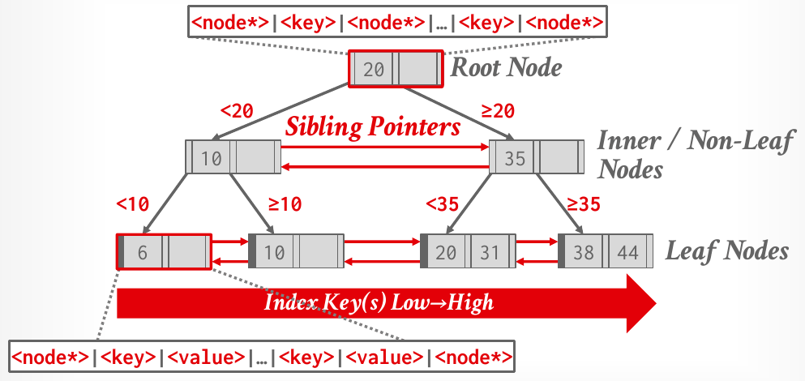

Database Internals in Go · Unit 4 · Lesson 1
P2.1 B+Tree Pages: Base, Internal, and Leaf Layouts
Implement BusTub's three B+tree page types as Go views over a page's bytes, read and write every field with encoding/binary at the offsets the tests check, and compute the MinSize values that the later stages rely on.
Unit 3 taught the B+tree on paper. Project 2 builds one, and every node of that tree is a page of your Project 1 buffer pool: the tree creates nodes with NewPage, reads them through read guards and changes them through write guards. This first stage contains no tree logic. It fixes what the bytes of a node mean: where the size is stored, where key 3 starts, where the record IDs begin. Every later stage reads and writes nodes through the accessors you write here, so a wrong offset now shows up later as a corrupted tree.
Unit 1, Lesson 2: a page is a []byte, and this course never overlays structs on it. How does Go code read the 4-byte integer stored at offset off?
Unit 3, Lesson 3: under the lecture's rules, with nodes of at most 4 keys, 16 is inserted into the full leaf [13, 14, 15, 17]. What happens to the leaf?
Unit 2, Lesson 6: page guards only ever travel as *ReadPageGuard and *WritePageGuard. What goes wrong if code copies a guard by value, g2 := *g1, and drops both?
Before you start: Project 1 first, then pull the btree package
Project 2 runs on your own Project 1 buffer pool. The tree reaches pages only through NewPage, ReadPage, WritePage and DeletePage, and the tests count pins and wait on latches, so a buffer pool bug shows up as a B+tree failure. The writeup says the same about BusTub: if your Project 1 solution is incorrect, you must fix it first. From go_db_internals/intro_to_db, check that Project 1 passes completely:
go test -race ./bufferpool/It must print ok intro_to_db/bufferpool. Then commit your work on your branch and pull the Project 2 code from main, as the setup lesson described:
git add -A && git commit -m "P1 passes"
git pull --no-rebase origin mainThe merge is clean, because it only adds files: the package btree/, the command cmd/btree_printer/, and common/rid.go, which defines common.RID, the record ID that leaf pages store as their values. The package documentation in btree/doc.go is the project's README; read it with go doc ./btree, or open the file. It lists nine stages, each with its own test regex. This lesson is stage 1; the next three lessons cover stages 2, 3 and 4.
You edit five files. The three page files belong to this stage; b_plus_tree.go (search, insertion, deletion, latching) and index_iterator.go come later. Everything not marked TODO(P2) is pre-built: keys and comparators in generic_key.go, the header page view, the tracing buffer pool wrapper, and the debug printers in b_plus_tree_debug.go, which read the tree through your page methods and so work as soon as this stage passes.
#10 Latching in Data Structures, "Summary and conclusion" (1:18:04), slides 41–46: the chapter ends with the Project 2 announcement, its four tasks and the development hints.
A page is a view over its bytes
In BusTub a B+tree node is a C++ class laid over the page's memory with reinterpret_cast (or guard.As<BPlusTreeLeafPage>()): the class's fields simply are the page's bytes. Go has no safe way to do that, so the Go port uses a page view, a small struct that holds the page's []byte and whose methods read or write one field each with encoding/binary. Every integer is stored little-endian, which is how BusTub's structs look in memory on x86 and ARM, so the Go pages have the same bytes as BusTub's.
A view keeps no state of its own. Everything lives in the page bytes, which has two consequences. Two views of the same page always agree. And nothing is lost when the buffer pool evicts the page and reads it back later: TestBPlusTreePageStateLivesInBytes writes two pages through views, pushes them out of a 3-frame pool, and checks every field after reloading them. The stub comments repeat the rule for any helper you add: keep every piece of state in the page bytes.
Three pre-built constructors build views:
AsBPlusTreePage(data)for code that only needs the shared header, for example to askIsLeafPagebefore deciding which view to build.AsBPlusTreeInternalPage(data, keySize)andAsBPlusTreeLeafPage(data, keySize, numTombs). They also record the key size, the slot count and the size of the tombstone buffer. In C++ these are template arguments, fixed at compile time; in Go they are run-time values that every tree carries in itsOptions.
Both node views embed BPlusTreePage, which is how the Go code mirrors BusTub's inheritance: leaf.Size() and internal.MaxSize() are the base view's methods, promoted. Build views of a ReadPageGuard's Data() only to read; call the Set and Init methods only on a view of a WritePageGuard's DataMut(). A view is valid as long as the guard it came from: after Drop, the frame can be reused for another page.
The shared header
Every B+tree page starts with the same 12 bytes. The offsets are pre-built constants in b_plus_tree_page.go:
| Offset | Bytes | Field (BusTub) | Go type in the page | Accessors you write |
|---|---|---|---|---|
| 0 | 4 | page_type_ | IndexPageType (uint32) | IsLeafPage, SetPageType |
| 4 | 4 | size_ | int32 | Size, SetSize, ChangeSizeBy |
| 8 | 4 | max_size_ | int32 | MaxSize, SetMaxSize |
The page types are IndexPageInvalid (0), IndexPageLeaf (1) and IndexPageInternal (2). A freshly allocated page is all zeros, so it reads as invalid until Init sets its type. The size counts key/value pairs; for an internal page that is the number of child pointers. The accessors take and return Go ints, so they convert on the way in and out.
Internal pages

After the 12-byte header, an internal page holds key_array_, then page_id_array_. Both arrays have InternalPageSlotCount(keySize) slots, which is (8192 − 12) / (keySize + 4) rounded down: 681 slots for 8-byte keys, 409 for 16-byte keys. A child pointer is a common.PageID, 4 bytes. The arrays are sized by the slot count whatever MaxSize is, exactly as in BusTub, so with 8-byte keys the page ID array always starts at byte 12 + 681 × 8 = 5460, even in a tree whose internal max size is 3. The pre-built keyOffset(i) and valueOffset(i) compute these positions; use them, because the tests check bytes at exactly those offsets.
Index i pairs KeyAt(i) with ValueAt(i), and child i covers the keys K with KeyAt(i) ≤ K < KeyAt(i+1), the lecture's "< goes left, ≥ goes right" rule. The key at index 0 is never valid: the leftmost child has no lower bound. So a page whose Size() is n has n children, at indexes 0 to n − 1, and n − 1 valid keys, at indexes 1 to n − 1. The doc comment inherited from BusTub speaks of "n indexed keys and n + 1 child pointers", which counts differently; trust the layout and the rule that Size counts child pointers.
Two accessors have rules of their own. ValueIndex(pageID) returns the index of a child pointer, or −1 if the page has no such child; the insert and delete code uses it to find a node's position in its parent. SetValueAt is a Go addition that BusTub leaves to the student; the stage-2 tests use it to build trees by hand.
Leaf pages
A leaf page adds a 4-byte next-page pointer to the header, then a tombstone area, then its two arrays:
| Offset | Bytes | Field (BusTub) | Go accessors |
|---|---|---|---|
| 0 | 12 | shared header | the base view's methods |
| 12 | 4 | next_page_id_ | NextPageID, SetNextPageID |
| 16 | 8 | num_tombstones_ (a size_t) | none public (stage 7) |
| 24 | 8 per slot | tombstones_[tombCount] | Tombstones |
keyOffset(0) = 24 + 8 × tombCount | keySize per slot | key_array_[slotCount] | KeyAt, SetKeyAt |
valueOffset(0) = keyOffset(slotCount) | 8 per slot | rid_array_[slotCount] | ValueAt, SetValueAt |
The slot count is LeafPageSlotCount(keySize, numTombs), which is (8192 − 16 − 8 − 8 × tombCount) / (keySize + 8) rounded down: 510 for 8-byte keys and no tombstones, 509 with a buffer of 2 or 3 tombstones, 340 for 16-byte keys. A stored RID is 8 bytes: the PageID (4 bytes, signed) and then the SlotNum (4 bytes, unsigned). Leaves are linked in one direction only; the lecture's leaves also have a previous pointer, BusTub's don't.
The tombstone buffer is Fall 2025's addition, the "simplified Bε-tree" that Unit 3 introduced: a deleted key's entry stays in the arrays and its index is recorded in the buffer. Its rules arrive in stage 7. In this stage, Init sets the count to 0, and Tombstones only has to report the keys of whatever indexes the buffer holds, which for now is none. What matters already is the space: with NumTombs = 2, the key array starts at byte 40, not 24, and a leaf that ignores keyOffset overwrites the buffer.
#08 B+Trees, "Introduction to B+ trees" (17:02), slides 12–19: the node and leaf layouts these pages implement, with sorted keys in one array and values in another.
MinSize: the rounding the tests pin
The B+tree's invariant says every node other than the root is at least half full. BusTub leaves the rounding open; its comment on GetMinSize says "whether you will take ceil() or floor() depends on your implementation". This course fixes it, and TestBPlusTreePageMinSize checks it:
- A leaf page's
MinSizeisMaxSize / 2, rounded down. Leaf max sizes 2, 3, 4, 5, 6 give 1, 1, 2, 2, 3. - An internal page's
MinSizeis(MaxSize + 1) / 2, rounded up. Internal max sizes 3, 4, 5, 6 give 2, 2, 3, 3.
The two roundings come from the split rules of the next lessons. A leaf splits when an insertion brings it to MaxSize entries, and the left half keeps MaxSize / 2 of them, rounded down; that is the largest minimum a leaf split can always respect. An internal page splits when it already holds MaxSize children and one more arrives: MaxSize + 1 pointers, of which the left half keeps half, rounded down, which is MaxSize / 2 rounded up. The same values make merges fit. An underflowing page holds MinSize − 1 entries, and merging it with a sibling at MinSize gives at most MaxSize − 1 entries for a leaf (still below the size that triggers a split) and at most MaxSize children for an internal page. Stages 5 and 6 rely on that.
A view has value receivers, func (p BPlusTreeLeafPage) SetKeyAt(...), and the setters still work, because the struct holds a slice header and writes go through it to the shared bytes. Copying a view is cheap and harmless: it owns nothing, unlike a page guard, which owns a latch and a pin and therefore only travels as a pointer. The aliasing that makes setters work is also a trap for getters. A slice of the page, p.data[off : off+keySize], changes when the page changes, and points into whatever page the frame holds after an eviction. In C++, KeyAt returns the key by value; in Go, KeyAt must return a new slice, which TestBPlusTreePage*KeysAndValues checks by modifying the returned key.
Page IDs are signed (common.PageID is an int32), and common.InvalidPageID is −1. PutUint32(b, uint32(id)) stores −1 as the four bytes ff ff ff ff, and int32(Uint32(b)) turns them back into −1. Skip the int32 conversion on the way back and you get 4294967295, a page that does not exist. The pre-built BPlusTreeHeaderPage.RootPageID shows the round trip.
Check your understanding
A tree has 8-byte keys and NumTombs = 3. In one of its leaf pages, at which byte does key_array_[0] start, and how many key slots does the page have?
A tree has LeafMaxSize = 7 and InternalMaxSize = 7. What do its leaf and internal pages return from MinSize?
An internal page view's Size() returns 4. Which indexes hold valid keys and which hold child page IDs?
Someone writes KeyAt as return p.data[off : off+p.keySize]. A caller gets a key this way from a read guard's page, drops the guard, and compares the key later. What can happen?
Init on a leaf page sets the next page ID to common.InvalidPageID. Which bytes does the page hold at offsets 12 to 15 afterwards?
Build it: the page layouts (stage P2.1)
You edit three files: btree/b_plus_tree_page.go, btree/b_plus_tree_internal_page.go and btree/b_plus_tree_leaf_page.go. Run commands from go_db_internals/intro_to_db. The rules, in plain words:
- Read and write every field with
binary.LittleEndian, at the pre-built offset constants and the pre-builtkeyOffset,valueOffsetandtombstoneOffsetmethods. Never hard-code 8 for the key size: the tests use 4-, 8- and 16-byte keys. Init(maxSize)sets the page type, a size of 0 and the max size; a leaf'sInitalso sets the next page ID tocommon.InvalidPageIDand the tombstone count to 0. The tests runInitover pages full of garbage bytes.KeyAtreturns a copy, on both page types.ValueIndexreturns −1 for a page ID that is not a child.- Leaf
MinSizerounds down, internalMinSizerounds up. - Keep all state in the page bytes. You may add helper methods (the stubs suggest a few for later stages), but no fields that hold page data.
-
What to think about
Each field is 4 bytes at a known offset. Which
encoding/binarycalls read and write exactly 4 bytes? The page stores anint32and the method returns anint: where do the conversions go, and why does theint32step matter for negative values? What doesChangeSizeByneed beyond the other two size methods?The approach
Write two private helpers on
BPlusTreePage, one that reads the little-endianint32at an offset and returns anint, and one that writes anintback as anint32. The size and max-size accessors become one line each, atsizeOffsetandmaxSizeOffset.ChangeSizeBysets the size to the current size plus the amount.SetPageTypestoresuint32(pageType)atpageTypeOffset, andIsLeafPagecompares the stored value withIndexPageLeaf. Since the node views embedBPlusTreePage, they can use your helpers too.One key fragment
The pre-built header page view does the same round trip for its root page ID:
return common.PageID(int32(binary.LittleEndian.Uint32(h.data[0:4]))) // and to write it: binary.LittleEndian.PutUint32(h.data[0:4], uint32(rootPageID))Checkpoint: the headerRun
go test -race -run '^TestBPlusTreePageHeaderFields$' ./btree/. It checks each field through your accessors and in the raw bytes, and that a second view of the same bytes agrees. Success printsok intro_to_db/btree. A field at the wrong offset fails with a message such asbytes 4-7 = 0 after SetSize(7), want 7 (little-endian size at offset 4). -
What to think about
Which three header fields does a fresh internal page need? A child pointer is a
common.PageID: how many bytes, signed or unsigned, and which pre-built method gives its offset? Which indexes canValueIndexreturn, and how many entries does it have to look at?The approach
InitcallsSetPageType(IndexPageInternal),SetSize(0)andSetMaxSize(maxSize).ValueAtandSetValueAtread and write 4 bytes atp.valueOffset(index), converting throughint32as in the header.ValueIndexlooks at the children 0 toSize() − 1and returns the first index whose value matches, or −1. A linear scan is fine: the tests don't require anything faster, and the tree calls it only a few times per split or merge.One key fragment
for i := 0; i < p.Size(); i++ { // only the live children, not the whole slot array // compare p.ValueAt(i) with value } -
What to think about
Where does key i start, and how long is it? What would a caller see later if
KeyAtreturned a slice of the page itself? What shouldSetKeyAtdo if it is handed a key of the wrong length?The approach
The key occupies
p.keySizebytes fromp.keyOffset(index).KeyAtreturns a fresh slice holding a copy of those bytes, typed asGenericKey.SetKeyAtcopies the key's bytes into the same range. Apanicon a key whose length isn'tp.keySizeis optional, but it turns a silent corruption into a clear message. A private helper that returns the key's range as a slice of the page is handy for later stages (binary search and memmove), as long as nothing outside the page methods keeps it.One key fragment
a := page[i:j] // shares the page's memory b := bytes.Clone(page[i:j]) // a copy the caller can keepCheckpoint: internal pagesRun
go test -race -run '^TestBPlusTreePageInternal' ./btree/. It runsTestBPlusTreePageInternalInitandTestBPlusTreePageInternalKeysAndValues, the second with 8- and 16-byte keys, and printsok intro_to_db/btreeon success. AKeyAtthat returns a slice of the page fails withmodifying the slice returned by KeyAt(1) changed the page (KeyAt(1) = 245): KeyAt must return a copy. -
What to think about
The tests run a leaf's
Initover a page full of garbage bytes. Which fields must it set so that the leaf has no next page and no tombstones, and how wide isnum_tombstones_? ForTombstones, where does the count live, and what does each buffer slot hold: a key, or an index into the key array?The approach
Initsets the type toIndexPageLeaf, the size to 0, the max size, the next page ID tocommon.InvalidPageID, and writes 0 as auint64atnumTombstonesOffset. The next page ID is a signed 4-byte value atnextPageIDOffset.Tombstonesreads the count, then for each of the first count buffer slots reads the 8-byte entry index atp.tombstoneOffset(i)and appendsKeyAt(thatIndex). With a count of 0 it returns an empty slice, which is all this stage needs; stage 7 fills the buffer.One key fragment
n := int(binary.LittleEndian.Uint64(p.data[numTombstonesOffset:])) // size_t: 8 bytes -
What to think about
The keys work exactly like the internal page's, at the leaf's own
keyOffset. Acommon.RIDhas two fields: which comes first in the 8 bytes, and which one is signed?The approach
Reuse the key logic from the internal page (copy out in
KeyAt, copy in inSetKeyAt). For values, computeoff := p.valueOffset(index); the page ID is theint32atoffand the slot number theuint32atoff + 4. Build the result withcommon.RID{PageID: ..., SlotNum: ...}orcommon.NewRID.One key fragment
// rid_array_[index], 8 bytes from off := p.valueOffset(index): // [off, off+4) PageID (int32, convert through int32 when reading) // [off+4, off+8) SlotNum (uint32)Checkpoint: leaf pagesRun
go test -race -run '^TestBPlusTreePageLeaf' ./btree/. It runsTestBPlusTreePageLeafInit(over garbage bytes, with tombstone buffers of 0 and 3) andTestBPlusTreePageLeafKeysAndValues(key sizes 4, 8 and 16, tombstone buffers of 0, 2 and 3). A leaf that hard-codes 8-byte keys fails on the 16-byte case withbytes at keyOffset(1) = [...], want ... (use the pre-built keyOffset; it accounts for the tombstone buffer); anInitthat forgets the next page fails withNextPageID() = -842150451 after Init, want common.InvalidPageID. -
What to think about
MinSizeis a method of the base view, which doesn't know which node view it came from. What in the page bytes tells it? How do you write a rounded-up integer division withoutmath.Ceil?The approach
Branch on
IsLeafPage(). For a leaf, returnMaxSize() / 2(Go's integer division truncates, which rounds down for positive numbers). For an internal page, add 1 before dividing. Check yourself against the table: leaf 2, 3, 4, 5, 6 give 1, 1, 2, 2, 3; internal 3, 4, 5, 6 give 2, 2, 3, 3.One key fragment
// ceil(a / b) for positive ints, without floats: (a + b - 1) / b
From go_db_internals/intro_to_db, run:
go test -race -run '^TestBPlusTreePage' ./btree/It runs the seven stage-1 tests: TestBPlusTreePageHeaderFields, TestBPlusTreePageMinSize, TestBPlusTreePageInternalInit, TestBPlusTreePageInternalKeysAndValues, TestBPlusTreePageLeafInit, TestBPlusTreePageLeafKeysAndValues and TestBPlusTreePageStateLivesInBytes. BusTub has no tests of its own for the pages; these check the documented layout. Success prints one line, ok intro_to_db/btree and the time, about a second.
A typical failure names the test, the method and the expected value:
--- FAIL: TestBPlusTreePageMinSize (0.00s)
b_plus_tree_page_test.go:87: leaf page with max size 3: MinSize() = 2, want 1 (MaxSize/2, rounded down)
FAIL
FAIL intro_to_db/btree 0.021sA method you haven't written yet fails with its stub's panic, for example panic: TODO(P2): BPlusTreePage.SetPageType not implemented, followed by the file and line. A panic: TODO(P1) message, or a hang in TestBPlusTreePageStateLivesInBytes, points to Project 1. If a run ever sits silent, stop it and rerun with a time limit after the regex, which makes go test print every goroutine's stack when it fires:
go test -race -run '^TestBPlusTreePage' -timeout 120s ./btree/Keep that habit for the whole project: some B+tree bugs, such as an internal page left with a single child, loop forever without waiting on any latch, and only go test's timeout stops them.
MinSize down while internal pages round it up. Ask your teacher (me) before moving on.
Primary sources: the CMU 15-445/645 Fall 2025 Project #2 writeup (Task #1, Requirements and Hints); BusTub src/include/storage/page/b_plus_tree_page.h, b_plus_tree_internal_page.h, b_plus_tree_leaf_page.h, b_plus_tree_header_page.h and src/storage/page/b_plus_tree_page.cpp at commit d49b823; Lecture #08 slides 12–19 and Lecture #10 slides 41–46; this course's btree/doc.go, the three page files and btree/b_plus_tree_page_test.go.